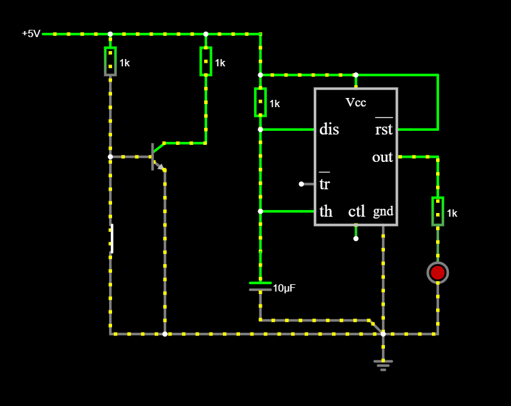

12. Osztály - 2. Félév
-

PLC programozás - egy vasúti átjáró mozgásérzékelőkkel, illetve sorompókkal. A feladat célja, hogy ha az érzékelők észlelik a vonat érkezését akkor a sorompók lezáródnak illeve a jelző lámpák pirosra váltanak, majd ha a vonat nem érzékelhető a sorompók felemelkednek és a jelzőlámpa fehérre vált.
Önreflexió
- A gyakorlati feladatok megerősítették az elméleti tudásomat és annak alkalmazását
-

Számítógépes szimuláció - tapskapcsoló Falstadban
Önreflexió
- Alapvető áramköri szimulációk elvégzése Falstadban
- Logikai kapuk és tranzisztorok működésének megértése